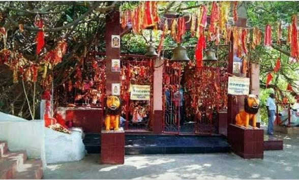
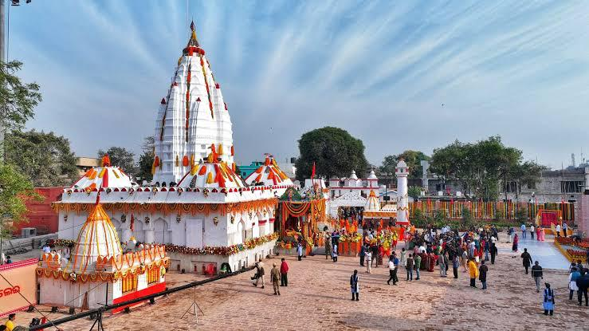
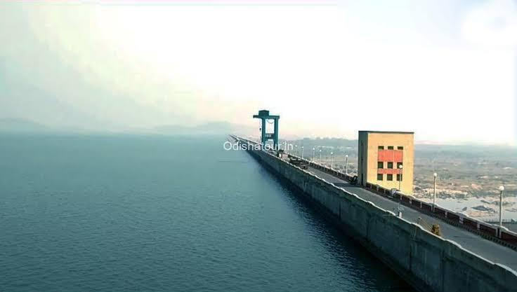

Gallery




The cultural city of western Odisha known for Hirakud Dam and Sambalpuri tradition.
Sambalpur is a beautiful city in Odisha famous for its handloom work, festivals and natural beauty. The city is located near the Hirakud Dam and is visited by many tourists every year.
One of the longest earthen dams in the world.
A famous temple dedicated to Goddess Samaleswari.
A wildlife sanctuary with beautiful natural views.
Sambalpur is famous for Sambalpuri sarees, folk dance and festivals like Nuakhai. The traditions of the city make it unique.


